Встречи на Исходниках.РУ |
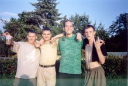 |
Фотка №1 Место: За кустами на лавочке (недалеко от Волги), по соседству с бомжом.
Долгожданная встреча состоялась.
Лица: GrAnd ("возьмите кто-нибудь, а то вдруг жена увидит"), Jin X ("сейчас как засмеюсь!"), Xeningem ("хорошо жить!"), AlaRic ("а хорошо жить ещё лучше, в натуре").
|
|
Фотка №2 Место: То же.
Присядем на дорожку.
Лица: GrAnd ("братан, промочи горло"), Xeningem ("а я чищу зубы пастой Aquafresh!"), Jin X (живой такой, весёлый), AlaRic ("а мне и тут совсем неплохо"), Витёк ("но-но! за базаром следи!").
| 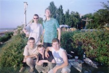 |
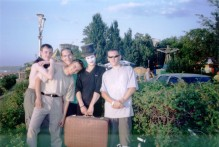 |
Фотка №3 Место: То же.
Акробаты, клоуны и мимы,
Лица: AlaRic ("дайте мне точку опоры..."), Xeningem ("здесь был |
|
Фотка №4 Место: То же.
Ну... мы пофли жа пывом...
Лица: Jin X (загадка: сколько путылок у меня в руке (и сколько всего рук)?), GrAnd (изучает новый метод поглощения пЫва).
| 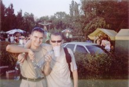 |
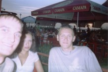 |
Фотка №5 Место: Jin X: "А может, в кафешке посидим?" GrAnd: "Давай!"
Хорошая фотка получилась, ни правда ли?
Лица: Jin X (третий запасной), Анжела ("чего уставился?"), GrAnd ("где я? гы!").
|
|
Фотка №6 Место: За столиком в кафешке (х/з как называется).
Все в сборе.
Лица: Jin X ("между пятой и шестой перерывчик небольшой"), Анжела ("мой он!"), GrAnd ("моя она!"), Витёк ("ну, я пошёл..."), AlaRic ("обожжи, ща допью... и тоже пойду"), Xeningem ("хе-хе-хе!"), Колян ("я не пью! ик! из мелкой посуды").
| 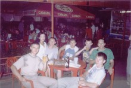 |
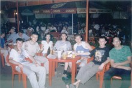 |
Фотка №7 Место: То же.
Position Number 2: опять сижу.
Лица: Колян, Jin X, Анжела, GrAnd, Витёк, AlaRic, Xeningem.
|
|
Фотка №8 Место: То же.
Компромат.
Лица: Колян ("хе-хе, запалили!"), Jin X ("я не курю!!!").
| 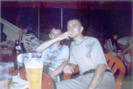 |
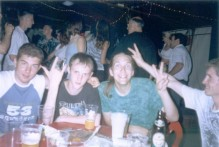 |
Фотка №9 Место: То же.
No comments.
Лица: Витёк ("хорошо сидим"), AlaRic ("всё путём, братва"), Xeningem ("сыыыыыр!"), кусок Коляна (угорает), люди какие-то (танцуют, кажись).
|
|
Фотка №10 Место: Да ну то же самое место!
Хороший фон, wallpaper прямо!
Лица: Xeningem ("я вас всех люблю!"), попа в белом (молчит), попа в цветочек (тоже молчит), Колян ("меня колбасит!").
| 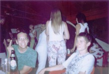 |
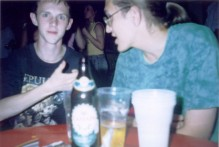 |
Фотка №11 Место: Я же сказал: то же самое место!!!
Ксён что-то усиленно впрягает Ромику.
Лица: AlaRic ("во даёт!"), Xeningem ("в то время как космические корабли бороздят просторы вселенной...").
|
|
Фотка №13 Место: Кафешка, танцплощадка типа.
Ага, застукали!
Лица (и не только): девушка ("да-даммм"), Xeningem ("я вас..."), ещё кто-то выглядывает (ну будем показывать пальцем).
| 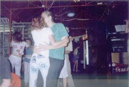 |
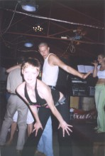 |
Фотка №15 Место: Примерно то же.
Деваха какая-то (я её даже и не видел)...
Лица: танцующие (шепчатся), деваха ("смотрите, какая я вся!"), чувак какой-то (видимо, изображает великого танцора современности), вокалистка.
|
|
Фотка №16 Место: То же самое, что и было.
Мы. Скоро будем отчаливать (отъезжать)...
Лица: Xeningem, Анжела, GrAnd ("я пока посплю тут чуток..."), Jin X (пританцовывающий), Колян + моя рука.
| 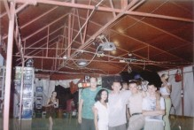 |
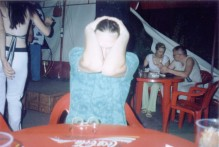 |
Фотка №17 Место: Опять за столиком.
Гибкость рук и никакого хамства!
Лица: Xeningem ("я существо из далёкой галактики..."), женщина вдалеке с выпученными глазами ("вот это да!") и мужик ("фокус-покус!").
|
|
Фотка №18 Место: То же.
Какая-то трещабельная ситуация.
Лица: Xeningem (сильно трещит), Колян (в задумчивости), Jin X (просто трещит).
| 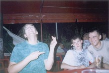 |
Репортаж подготовил
Красников Евгений (aka Jin X)
24.07.2004